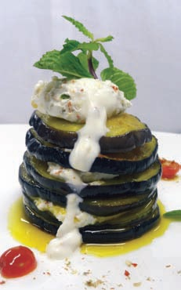
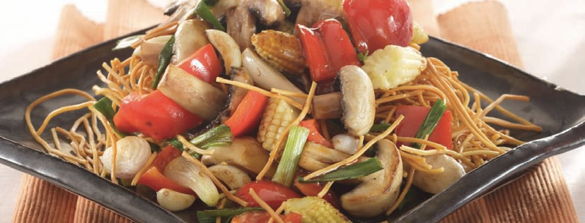
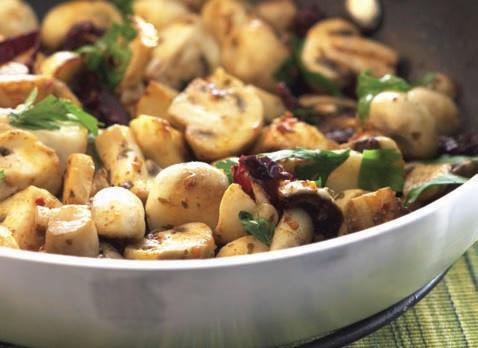

|
|
AUBERGINE TIAN
 |
INGREDIENTS
100 gm Medium-sized aubergine
50 ml Mustard oil
2 gm Red chilli powder
2 gm Salt
75 gm Hung curd
25 gm Chopped onion
5 gm Chopped green chillies
5 gm Chopped ginger
2 gm Chopped coriander leaves
2 gm Roasted cumin powder
2 gm Crushed and roasted coriander seeds
(dhania)
1 Whole red chilli, crushed
2 Cherry tomatoes
1 sprig Mint leaves
METHOD
Wash and dry aubergine. Cut it into round slices of
½cm. Apply salt, red chilli powder and rub mustard
oil on the slices. Leave for 10 minutes to rest, for the
oil to soak into the aubergine slices. Add onion,
green chillies, ginger, coriander, cumin powder, dry
coriander seeds and crushed red chilli in the hung
curd. Add salt. Take a microwave-proof plate and
arrange all aubergine slices separately. Microwave
each side on HIGH for 45 seconds by turning the
slices. Take a soaking paper and put aubergine slices
on it, one by one. Now take one slice of aubergine,
spread some curd filling. Arrange another slice on
top, apply filling again and make a tower of 5-6
slices. Make a quenelle of remaining curd dip and put
on top. Garnish it with mint leaf. Decorate it with a
few cut cherry tomato. |
SPECIAL NOTES: The paper will absorb the excess
oil from the aubergine slices. The curd should be
hung overnight to get good hung curd. |
STIR-FRIED VEGETABLES
 |
INGREDIENTS
2 tbsp Oil, preferably groundnut
2 tsp Fresh ginger, finely chopped
2 tsp Spring onions, finely chopped
2 tsp Garlic, finely chopped
3 cups Button mushrooms, carrots, bokchoy
and broccoli, all diced
¼ cup Chicken stock/water
2 tsp Schezwan sauce
2 tsp Dry sherry/rice wine
2 tsp Soy sauce (dark)
½ tsp Sugar
½ tsp Salt
2 tsp Sesame oil
METHOD
In a bowl, pour oil. Add ginger, spring onions and
garlic. Microwave for about 2 minutes. Add the
vegetables. Microwave for about 4 minutes. Quickly
add the rest of the ingredients except the sesame oil.
Stir. Microwave on HIGH for another 3 minutes or
until the mushrooms are cooked through and have
absorbed all the spices and seasonings. Just before
serving, add the sesame oil. Stir. Microwave for
another 1 minute. Stir. Serve warm. |
|
|
MASALA MUSHROOMS
 |
INGREDIENTS
½ cup Olive oil
6 cloves Large garlic, lightly crushed
4 cups Button mushrooms, cleaned
and cut into halves
1 tsp Oregano
1 tsp Cumin seeds
4 Kashmiri chillies, broken
1 tsp Sea salt (mota namak)
Dash of lemon juice
METHOD
Pour olive oil in a bowl. Add garlic. Microwave for 3
minutes, until golden. Roast the cumin on a preheated
crusty plate on GRILL for 30 seconds.
Remove, and add to the mushrooms and garlic.
Microwave on HIGH for 3 minutes. Stir. Add lemon
juice, chillies and lastly salt. Microwave for a further
2 minutes. Once cooked, toss in oregano. Stir well.
Serve hot with crusty white bread. |
|
|

|
|
.jpg)